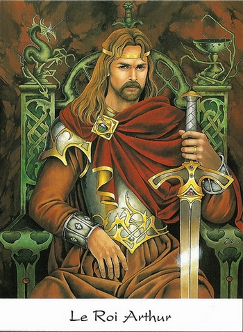
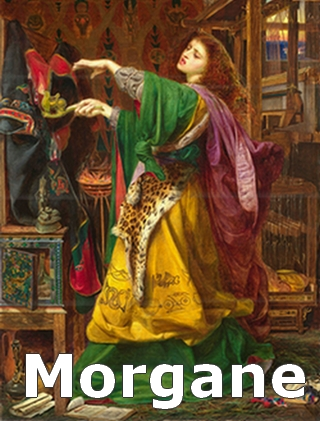
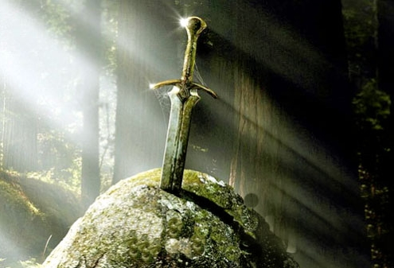

Ygerne* est la femme du Duc Gorlois De Cornouaille*. Elle vit à Tintagel avec son époux. Ils ont une fille, nommée Morgane*. Ygerne* est également la mère d'Arthur.

Uther Pendragon* était tombé sous son charme, lors d'un séjour à Tintagel. Il avait entrepris de la séduire ; mais celle-ci, fidèle au Duc* et pleine de dégoût pour Uther* l'avait rejeté. Uther*, fou de rage partit de Tintagel, il voulait se venger. Lorsqu'il se trouva assez loin du château, il envoya un messager à Tintagel, qui appris au Duc Gorlois* qu'il avait rendez-vous avec des seigneurs, qui voulaient la chute d'Uther*. Evidemment, tout cela n'était qu'un motif pour piéger le Duc*. Gorlois*, galopa pour arriver à temps à son rendez-vous, il espérait rentrer vite à Tintagel, malheureusement il ne rentra jamais. Il tomba dans une embuscade, et fut tué par les hommes d'Uther*.
Pendant ce temps, Merlin* usait de sa magie, pour donner à Uther Pendragon* l'apparence du Duc De Cornouaille*. Celui-ci rentra à Tintagel en se faisant passer pour le Duc*. Il entra dans la chambre d'Ygerne*, qui l'accueillit en croyant qui s'agissait de son mari. Ils passèrent une nuit ensemble. De cette nuit naîtrait un enfant d'exception.
Morgane* encore enfant, compris que son père était mort, et qu'Uther* en prenant l'apparence du Duc*, avait abusé d'Ygerne*. Morgane* rentra dans une colère terrible, elle voulut tuer Uther*, mais il fut sauvé de justesse par Merlin*.
Morgane* amait beaucoup son père, mais haïssait sa mère. Après qu'Uther Pendragon* lui ait échappé, elle prit Ygerne* comme la seconde responsable, de la mort de son père. Morgane* voulut donc s'en prendre à sa mère, et ôter la vie de l'enfant illégitime qu'elle avait eu d'Uther*.
Ygerne* avait trouvé refuge sur une île peuplée d'elfes qui menaient une existence paisible. Ces elfes savaient unir leurs forces pour survivre.
Une nuit, Ygerne* accoucha. Morgane* qui surveillait l'île de près, usa de ses pouvoirs pour déclencher l'éruption de tous les volcans de l'île. Les elfes en s'unissant réussirent à arrêter les éruptions volcaniques.
Ygerne* allait s'enfuir, mais elle fut rattrapée par Morgane*. Celle-ci utilisa sa magie pour modifier l'apparence d'Ygerne*, afin qu'elle devienne une femme hideuse. Ensuite, Morgane* voulut tuer l'enfant illégitime. Mais il était trop tard, Myrghèle (la plus ancienne et puissante des fées) s'en était emparé, et l'avait confié à Merlin*.
Merlin* traversa le pays, avec la mission d'assurer la sécurité de l'enfant. Lorsqu'il arriva au nord de l'Ecosse, il confia le nourrisson à son ami, Antor*. Merlin* lui demanda de l’élever comme son fils. L'enfant n'ayant pas encore de nom, Antor* décida de l'appeler Arthur. Antor* avait un fils, nommé Ké*, qui avait quelques années de plus qu'Arthur.
Le roi Uther Pendragon* mourut, piégé par Morgane*.
Merlin* allait tous les trois ans chez Antor*, afin de peaufiner l'éducation d'Arthur. Il lui enseignait des choses simples et variées pour qu'il devienne un homme d'exception : il lui apprit à être courageux et noble. Lorsque Arthur eu 15 ans, Merlin* lui annonça qu'il accomplirait de grandes choses.

Quelques temps plus tard, on apprit qu'une épée du nom d'Excalibur était plantée dans un rocher, situé dans la ville de Silchester. D'après une ancienne légende, celui qui retirerait l'épée du rocher, deviendrait le nouveau Roi de Logres*, en remplaçant le roi défunt : Uther Pendragon*.
Une fois la nouvelle diffusée sur tout le territoire Celte, de nombreux guerriers et suzerains se rendirent à Silchester. Antor* fit de même, il quitta son château accompagné de son fils Ké* et du jeune Arthur, qui lui servait d'écuyer. La ville de Silchester était peuplée d'hommes venus tenter leur chance, de chevaux, d'un public de curieux venu assister à l'événement, ainsi que des marchands venus pour faire des affaires.
Le moment tant attendu arriva, le moment où chaque participant, chacun son tour allait tenter d'extraire l'épée du rocher, et ainsi devenir le nouveau roi de Logres*. Les guerriers les plus puissants débutèrent l'épreuve, mais malgré leur force et leur détermination, aucun d'eux ne réussit à faire bouger Excalibur, qui était solidement fichée dans la roche. Les jeunes chevaliers purent à leur tour, essayer de retirer l'épée, en vain. Ké* décida d'aller tenter sa chance, mais il échoua également.
Aucun des concurrents avait triomphé, donc l'épreuve semblait infaisable. C'est alors qu'une voix s'éleva de la foule : "Puis-je tenter ma chance ?" et Arthur alla vers l'épée ; les barons prirent un fou rire puisqu'ils savaient qu'il ne pourrait pas extraire l'épée. Cependant, Arthur arriva au rocher, et d'un mouvement sans fatigue, il délogea Excalibur de la pierre et la brandit. Un rayon de soleil scintilla sur la lame, c'était un message de Dieu. Les barons ne riaient plus, ils criaient au complot, mais d'autres moins nombreux posèrent un genou à terre.
C'est ainsi qu'Arthur devint le nouveau Roi du Royaume de Logres*. Il débuta son règne dans la division ; pour être accepté de tous il lui faudra l'aide de Merlin* ; mais notamment celle des plus grand chevaliers, réunis autour de la Table Ronde. Tout cela pour partir à la Quête de Graal : la promesse de mille ans de bonheur sur le monde.
Arthur se maria à Guenièvre*, la fille du Roi de Carmélide, Léodogan.
Haut de Page